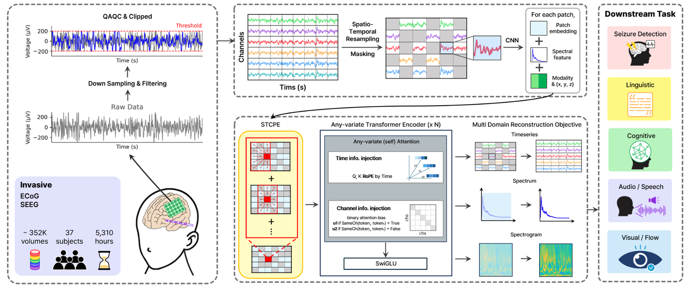

braindecode.models.DIVER1#
- class braindecode.models.DIVER1(n_outputs=None, n_chans=None, chs_info=None, n_times=None, input_window_seconds=None, sfreq=None, patch_size=500, d_model=256, n_layers=12, num_heads=None, d_ff=None, cnn_depth=3, cnn_stride=None, cnn_kernel_size=63, use_stcpe=True, stcpe_window=7, stcpe_ratio=8, use_spectral_emb=True, use_position_emb=True, pooling='flatten', mup_attention=True, drop_prob=0.1, activation=<class 'torch.nn.modules.activation.SiLU'>, cnn_out_size=None, channel_strategy='native', channel_strategy_kwargs=None)[source]#
DIVER-1 from Han et al. (2025) [Han2025].
Attention/Transformer Foundation Model Channel

DIVER-1 architecture, pretraining and downstream evaluation pipeline, reproduced from [Han2025].#
Added in version 2.0.
Encodes a
(channel, time-patch)grid with any-variate attention: RMS-normalized queries and keys, temporal RoPE, a learned same/cross-channel bias and SwiGLU blocks. Each patch passes through a strided CNN; the magnitude spectrum of the CNN token, not the raw patch, is projected and added. STCPE adds a local positional bias by encoding sliding temporal windows and averaging, rather than summing, their overlapping outputs. These choices follow the reference code and Table 7 where the paper’s prose differs.Three learned registers add a channel row, a patch column and their corner. They participate in attention but are discarded before the linear read-out.
pooling="flatten"follows the paper’s finetuning protocol;pooling="mean"allows varying channel counts with a fixed patch count. Pretraining masks, reconstruction heads, resampling and muP training are not implemented; the released checkpoints’ muP attention scaling is supported.Channel metadata
chs_infosupplies the default montage. Its"kind"must identify EEG or an intracranial type: SEEG/DBS imply depth electrodes, ECoG implies grids; strips cannot be inferred."loc"coordinates are converted from metres to millimetres for PopT’s sinusoidal encoding, without transforming their coordinate frame (for example, head coordinates are not converted to MNI). Missing, non-finite or exactly zero coordinates and unknown subtypes contribute zero embeddings. Disablinguse_position_embremoves both coordinate and type embeddings.For another montage, pass
channel_metadata_from_chs_info()’s result toforward(), shared by the batch or stacked to one montage per sample. The encoder is channel-permutation equivariant (the flattened head is not).Variable channel counts
Padded batches take a
ch_maskand onechan_metadataper sample; withpooling="mean"and dropout disabled, each sample is then encoded as if alone. Eager execution and TorchScript support this masked path.torch.exportdoes not currently support explicitchan_metadatabecause its validation depends on tensor values; this also limits export of masked batches, which require that metadata.Published variants and weights
All variants use 12 layers and 32 features per head. Tiny, Small, Base, Large, XL and XXL have widths 256, 512, 768, 1024, 2048 and 3072 respectively. At 500 Hz,
patch_size=500gives 1 s patches andpatch_size=50gives 0.1 s patches. Paper parameter counts include pretraining-only heads and a mask token; this port contains only the encoder and classification head.Released encoders are available as
braindecode/DIVER-1-0.1s-tiny(iEEG, width 256) andbraindecode/DIVER-1-1s-small(joint EEG/iEEG, width 512) on Hugging Face:model = DIVER1.from_pretrained( "braindecode/DIVER-1-0.1s-tiny", chs_info=raw.info["chs"], n_times=500, n_outputs=2, )
The classification head is initialized on load and needs fine-tuning. Conversion utilities are distributed with the Hub checkpoints, not the library. Encoder features have been checked against both released checkpoints on CPU, with the reference’s always-active attention dropout disabled. This port disables attention dropout in eval mode.
License
Code is Apache-2.0 through the reference encoder’s MOIRAI /
uni2tsancestry; released DIVER Project weights are MIT-licensed.- Parameters:
n_outputs (int) – Number of outputs of the model. This is the number of classes in the case of classification.
n_chans (int) – Number of EEG channels.
chs_info (list of dict) – Information about each individual EEG channel. This should be filled with
info["chs"]. Refer tomne.Infofor more details.n_times (int) – Number of time samples of the input window.
input_window_seconds (float) – Length of the input window in seconds.
sfreq (float) – Sampling frequency of the EEG recordings.
patch_size (
int) – Number of samples per temporal patch, default 500 (1 s at the paper’s 500 Hz; the other published variant is 50). Patches shorter than 9 samples require an explicitcnn_strideorcnn_out_sizebecause the reference default requests 16 output positions.d_model (
int) – Token embedding dimension, default 256 (the Tiny variant).n_layers (
int) – Number of any-variate Transformer blocks.num_heads (
int|None) – Number of attention heads. Defaults tod_model // 32, as in the reference implementation.d_ff (
int|None) – Hidden dimension of the feed-forward blocks. Defaults to4 * d_model.cnn_depth (
int) – Number of convolution layers in the patch encoder.cnn_stride (
int|None) – Stride of the first (strided) convolution of the patch encoder. Defaults to the reference setting: the padded patch length divided by 8 forpatch_size >= 100and by 16 below, i.e. 64 for the 1 s variant and 4 for the 0.1 s variant. Cannot be combined withcnn_out_size.cnn_kernel_size (
int) – Kernel width of the first convolution of the patch encoder; must be odd. The remainingcnn_depth - 1convolutions use width 3 and stride 1.use_stcpe (
bool) – Whether to add the spatio-temporal conditional positional embedding.stcpe_window (
int) – Width (in patches) of the STCPE sliding window; must be odd.stcpe_ratio (
int) – Bottleneck ratio of STCPE: it operates atd_model // stcpe_ratio.use_spectral_emb (
bool) – Whether to add the spectral embedding.use_position_emb (
bool) – Whether to add the electrode coordinate and type embeddings.pooling (
str) – Token aggregation before the head."flatten"reproduces the paper’s finetuning protocol (a linear classifier on the flattened token grid);"mean"averages over channels and patches first, giving a head that is independent ofn_chans, which is what lets one instance read montages of any size.mup_attention (
bool) – Scale attention scores by1 / head_dim(the muP scaling the released checkpoints were trained with) instead of1 / sqrt(head_dim). Keep itTrueto load the pretrained weights.drop_prob (
float) – Dropout rate used in the encoder and the spectral embedding.activation (
type[Module]) – Activation layer class of the feed-forward blocks, defaultSiLU.cnn_out_size (
int|None) – Number of temporal output positions in each patch CNN, for example 8, 16 or 32. Must be a positive divisor of both the next-power-of-two padded patch length andd_model. Sets the first convolution’s stride topadded_length // cnn_out_sizeand its feature width tod_model // cnn_out_size; the final token width remainsd_model. If None, preservecnn_strideand its reference defaults above. Cannot be combined withcnn_stride.channel_strategy (
str) – How any montage reaches the backbone (pretrained models only; see Channel strategies)."native"keeps the model as it is."exact","zero","nearest","idw","spline","field","source","region","wiener"(callmodel.channel_layer.fitfirst) or"latent"map the montage ofchs_info(or of thechs_infogiven toforward) onto the backbone’s channels with aChannelLayer. Saved in the config.model(x)andmodel.forward(x)both apply the layer.channel_strategy_kwargs (
dict|None) – Options of the strategy (e.g.{"reg": 1e-2}for"spline").
- Raises:
ValueError – If some input signal-related parameters are not specified: and can not be inferred.
Notes
If some input signal-related parameters are not specified, there will be an attempt to infer them from the other parameters.
References
[Han2025] (1,2)Han, D. D., Gwon, Y., Lee, A. L., Lee, T., Lee, S. J., Choi, J., Lee, S., Bang, J., Lee, S., Park, D. K., Yoo, S., Chung, C. K. & Cha, J. (2025). DIVER-1: Scaling intracranial EEG foundation models for transferable representations. arXiv preprint arXiv:2512.19097. https://arxiv.org/abs/2512.19097
Hugging Face Hub integration
When the optional
huggingface_hubpackage is installed, all models automatically gain the ability to be pushed to and loaded from the Hugging Face Hub. Install with:pip install braindecode[hub]
Pushing a model to the Hub:
from braindecode.models import DIVER1 # Train your model model = DIVER1(n_chans=22, n_outputs=4, n_times=1000) # ... training code ... # Push to the Hub; ``datasets`` and ``base_model`` go to the card model.push_to_hub( repo_id="username/my-diver1-model", commit_message="Initial model upload", model_card_kwargs={"datasets": ["BNCI2014_001"]}, )
Loading a model from the Hub:
from braindecode.models import DIVER1 # Load pretrained model model = DIVER1.from_pretrained("username/my-diver1-model") # Data the weights were trained on, from the Hub model card print(model.card_data.datasets if model.card_data else None) # Load with a different number of outputs (head is rebuilt automatically) model = DIVER1.from_pretrained("username/my-diver1-model", n_outputs=4)
Extracting features and replacing the head:
import torch x = torch.randn(1, model.n_chans, model.n_times) # Extract encoder features (consistent dict across all models) out = model(x, return_features=True) features = out["features"] # Replace the classification head model.reset_head(n_outputs=10)
Saving and restoring full configuration:
import json config = model.get_config() # all __init__ params with open("config.json", "w") as f: json.dump(config, f) model2 = DIVER1.from_config(config) # reconstruct (no weights)
All model parameters (both EEG-specific and model-specific such as dropout rates, activation functions, number of filters) are automatically saved to the Hub and restored when loading.
See Loading and Adapting Pretrained Foundation Models for a complete tutorial.
Methods
- forward(x, chan_metadata=None, ch_mask=None, return_features=False)[source]#
Encode an iEEG batch into class logits.
- Parameters:
x (
Tensor) – Input of shape(batch, n_chans, n_times).chan_metadata (
Tensor|None) –(n_chans, 5)electrode metadata of the recording this batch comes from, one row of (x, y, z, modality, sub-modality) per channel, aschannel_metadata_from_chs_info()builds it from itschs_info; every sample of the batch shares it. A(batch, n_chans, 5)stack gives each sample its own montage; it is required withch_mask. Defaults to the montage given at construction, which only fits the construction-time channel count.ch_mask (
Tensor|None) –(batch, n_chans)mask of real channels, seecheck_ch_mask(). Needs per-samplechan_metadataandpooling="mean".return_features (
bool) – IfTrue, return{"features": pooled, "cls_token": None, "tokens": tokens}instead of the class logits: the pooled embedding and the encoder tokens without the registers,(batch, n_chans, n_patches, d_model), zero for padded channels.
- Returns:
Class logits of shape
(batch, n_outputs), or the feature dict whenreturn_featuresis set.- Return type:
- reset_head(n_outputs)[source]#
Replace the linear classification head for a new
n_outputs.- Parameters:
n_outputs (int) – New number of output classes.
Examples
>>> from braindecode.models import BENDR >>> model = BENDR(n_chans=22, n_times=1000, n_outputs=4) >>> model.reset_head(10) >>> model.n_outputs 10
Added in version 1.4.